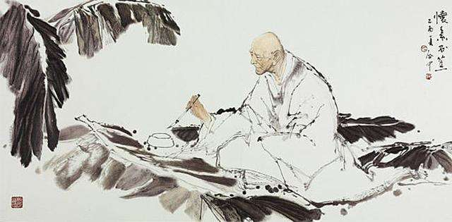

绿天庵，是唐代著名书法家，人称草书圣手的怀素出家修行，种蕉练字的地方。
怀素，字藏真，本姓钱，性疏放不拘细行，饮酒以养性，草书以畅志。幼年，随从伯祖父是融禅师出家。天宝年间，十九岁的怀素云游潇湘之地，上了清阴庵，在此修行，专攻草书，师于草圣张旭。据说，他虽出家，却贪杯，醉中挥毫，运笔如疾风骤雨，飞动圆转，不失法度。其狂草为当朝之冠。时人呼张旭“张癫”，称怀素“以狂继癫”，并称“癫张醉素”。
据记载，怀素练字十分勤奋刻苦。每日黎明即起，研墨挥毫；贫而无纸，便摘蕉叶练字。于是，其寺旁空地遍种蕉树。数年后，蕉叶飒飒，绿波浮动，染绿天空。他便将清阴庵改为“绿天庵”。怀素与李白为同时代之人，秉性相近，有交谊。李白有诗赠怀素，中有“少年上人号怀素，草书天下称独步”的赞语。
据零陵县志记载：绿天庵清咸丰壬子1852年毁于兵，同治壬戍1862年郡守阳翰主持重建。原有正殿、后殿各一座，上为种蕉亭，左为醉僧楼，有怀素塑像。庵后一处刻有“ 砚泉”二字,是怀素磨墨取水的地方。右角有“笔冢”塔，怀素写秃了的笔都埋于此。庵正北70余步有墨池，是怀素洗砚处。随着岁月流逝，这些历史陈迹，皆已不见。如今仅有一块《千字文》碑，存永州城内高山寺后面（现地区精神病院）。怀素书法留有《自叙》、《千字文》碑帖，现存永州。